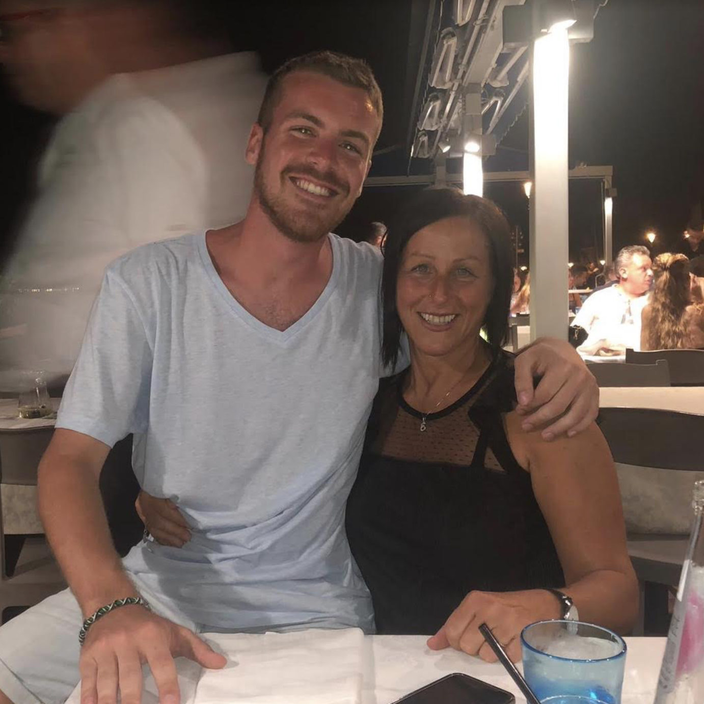
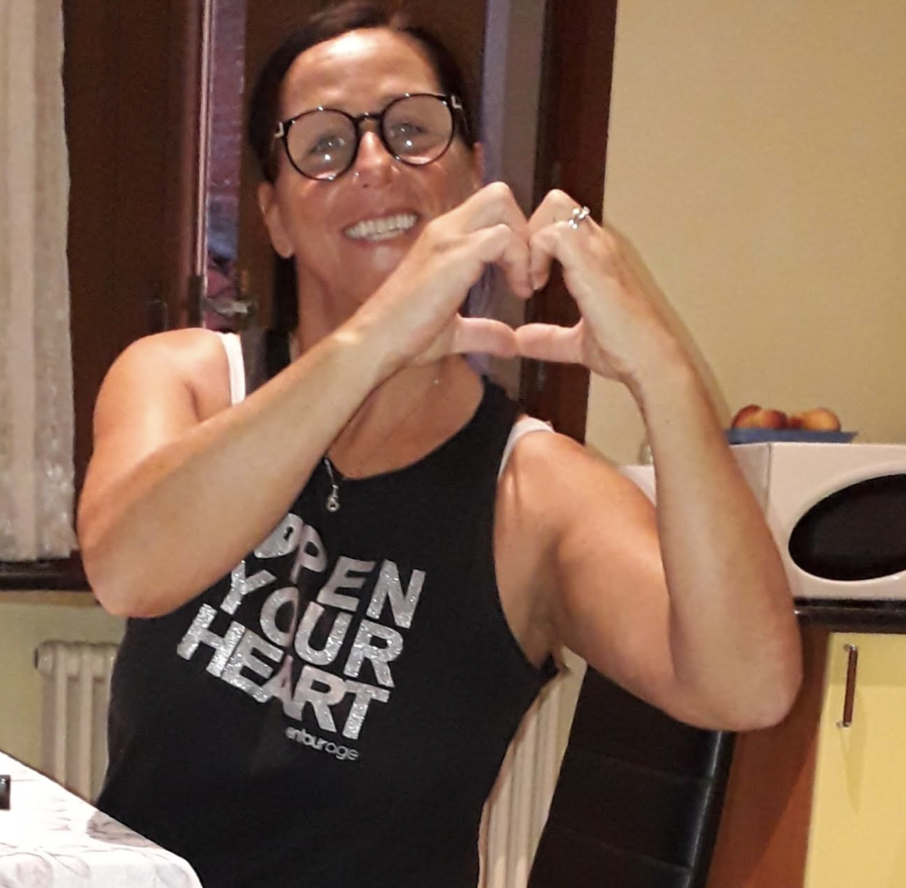
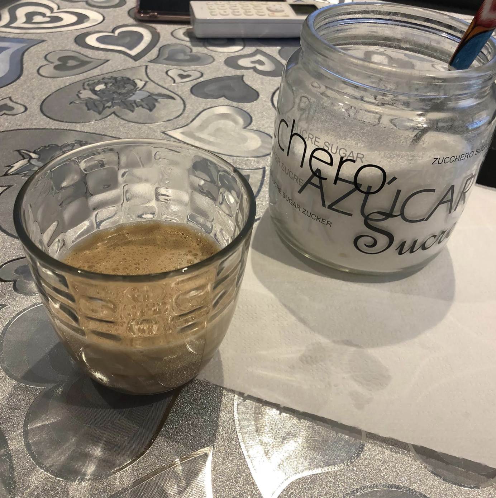
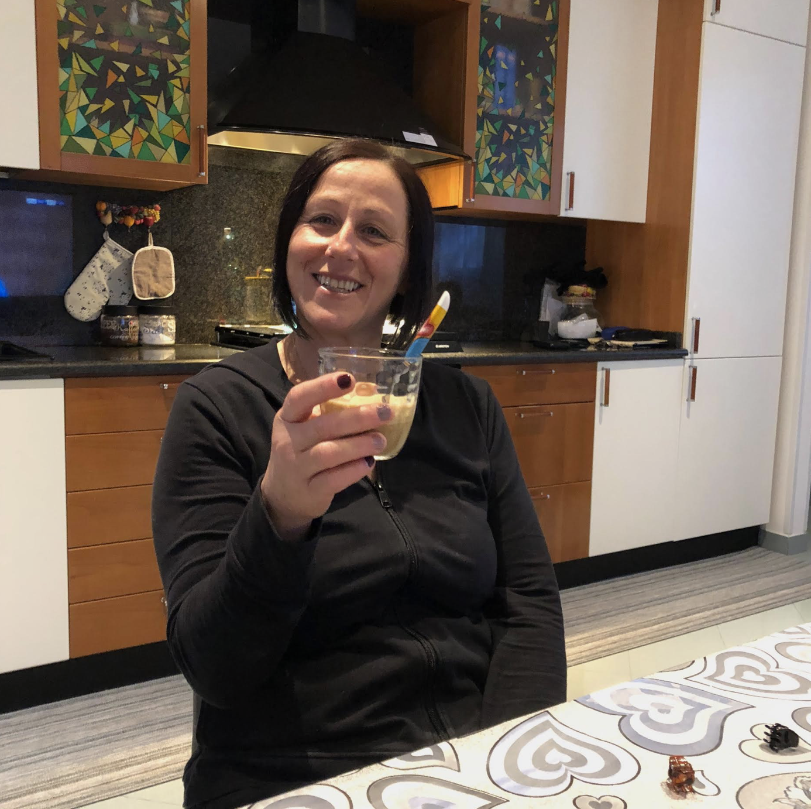

Eliana is your dadpapá 's sistersorella and you two have an incredible auntie-nephew relationship. Since always she is one of your favorite person to go to for a chat or a laugh.

What makes her great is her joyful personality and her desire to always see lifevita in a positive way. She always knows how to give people the strength to face every problem life puts you in front of.
In the last year you took it as a habit to go to auntie Eliana for coffee either after lucnhpranzo or after dinnercena . You like very near, in just four or five minutes by walk you're at her place.

Another reason why it is great having these special moments with auntie Eliana is because every time you go to her place you see your cousinscugini who you very much love.

Click on "Final" if you want to continue meeting people and visiting Pellestrina.
Or click "Go back" if you want to relive some island experiences.